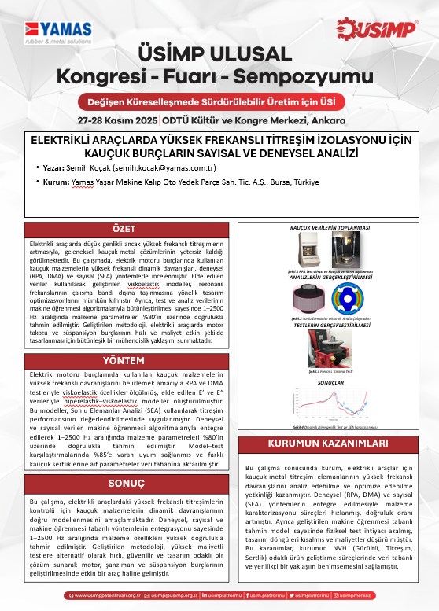
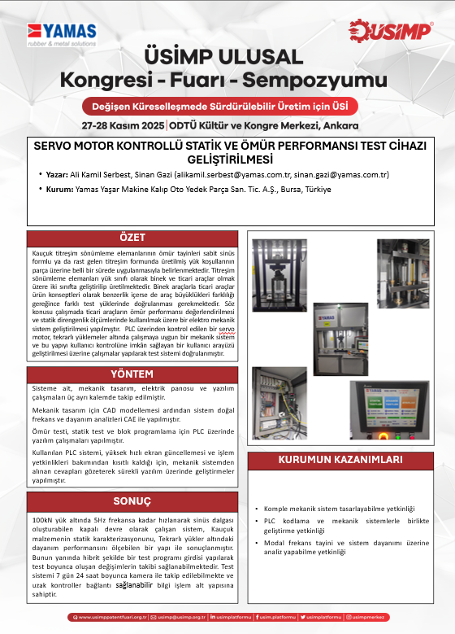
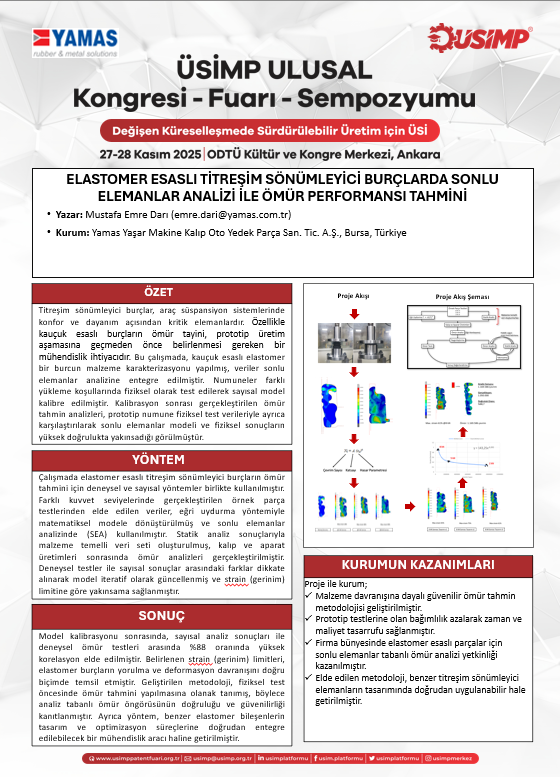
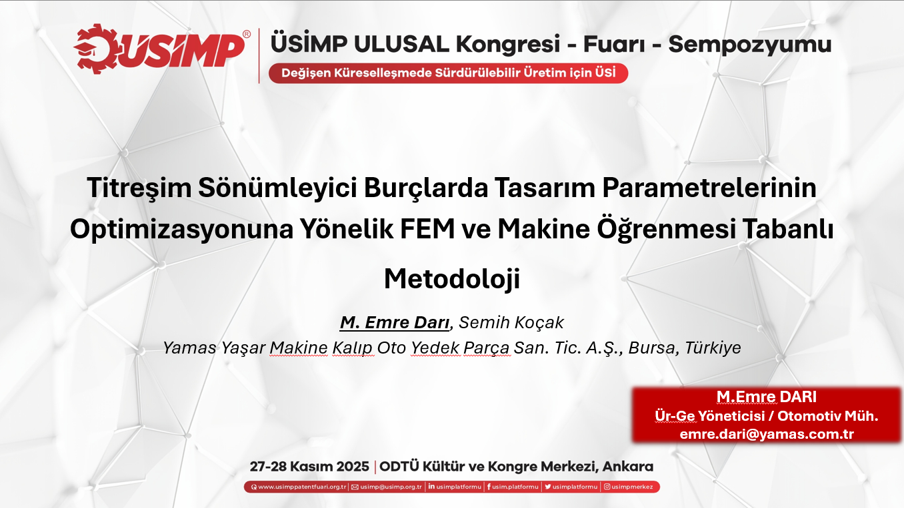
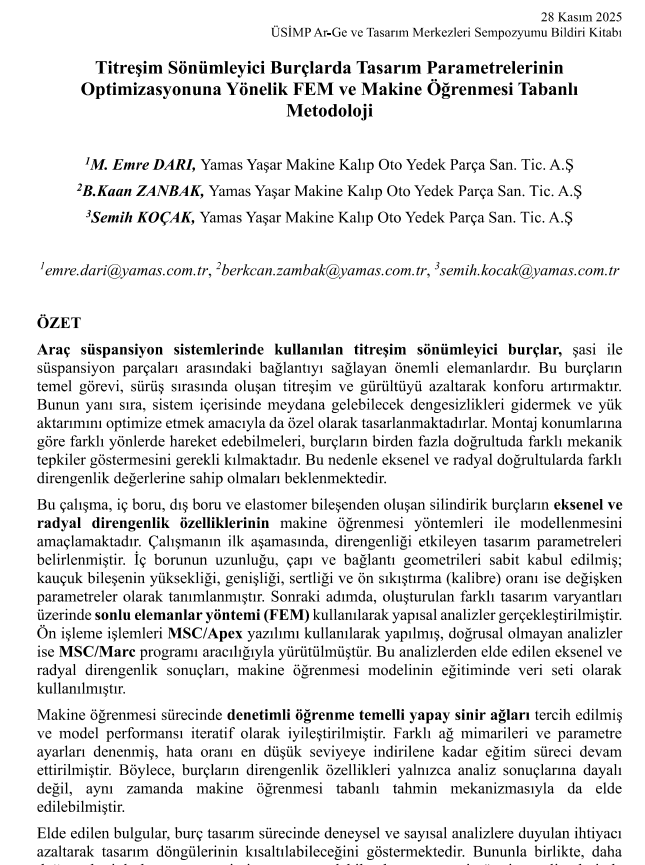

🚀 Güncel Gelişmeler

ELEKTRİKLİ ARAÇLARDA YÜKSEK FREKANSLI TİTREŞİM İZOLASYONU İÇİN KAUÇUK BURÇLARIN SAYISAL VE DENEYSEL ANALİZİ
Yazar: Semih Koçak

SERVO MOTOR KONTROLLÜ STATİK VE ÖMÜR PERFORMANSI TEST CİHAZI GELİŞTİRİLMESİ
Yazar: Ali Kamil Serbest, Sinan Gazi

ELASTOMER ESASLI TİTREŞİM SÖNÜMLEYİCİ BURÇLARDA SONLU ELEMANLAR ANALİZİ İLE ÖMÜR PERFORMANSI TAHMİNİ
Yazar: Mustafa Emre Darı

Titreşim Sönümleyici Burçlarda Tasarım Parametrelerinin Optimizasyonuna Yönelik FEM ve Makine Öğrenmesi Tabanlı Metodoloji
Yazar: Emre Darı, Semih Koçak

Titreşim Sönümleyici Burçlarda Tasarım Parametrelerinin Optimizasyonuna Yönelik FEM ve Makine Öğrenmesi Tabanlı Metodoloji
Yazar: Emre Darı, Berkcan K. Zanbak, Semih Koçak
‹
›